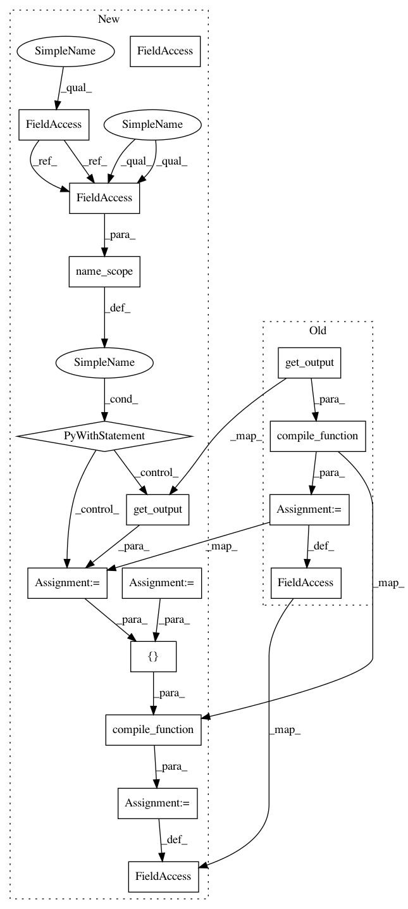

4ef810643f162aebb1d9efd153a82e0dc9e9094e,garage/tf/policies/categorical_conv_policy.py,CategoricalConvPolicy,__init__,#CategoricalConvPolicy#Any#Any#Any#Any#Any#Any#Any#Any#Any#Any#,16
Before Change
self._l_prob = prob_network.output_layer
self._l_obs = prob_network.input_layer
self._f_prob = tensor_utils.compile_function(
[prob_network.input_layer.input_var],
L.get_output(prob_network.output_layer))
self._dist = Categorical(env_spec.action_space.n)
super(CategoricalConvPolicy, self).__init__(env_spec)
After Change
self._name = name
self._env_spec = env_spec
self._prob_network_name = "prob_network"
with tf.variable_scope(name, "CategoricalConvPolicy"):
if prob_network is None:
prob_network = ConvNetwork(
input_shape=env_spec.observation_space.shape,
output_dim=env_spec.action_space.n,
conv_filters=conv_filters,
conv_filter_sizes=conv_filter_sizes,
conv_strides=conv_strides,
conv_pads=conv_pads,
hidden_sizes=hidden_sizes,
hidden_nonlinearity=hidden_nonlinearity,
output_nonlinearity=output_nonlinearity,
name="conv_prob_network",
)
with tf.name_scope(self._prob_network_name):
out_prob = L.get_output(prob_network.output_layer)
self._l_prob = prob_network.output_layer
self._l_obs = prob_network.input_layer
self._f_prob = tensor_utils.compile_function(
[prob_network.input_layer.input_var], [out_prob])
self._dist = Categorical(env_spec.action_space.n)
super(CategoricalConvPolicy, self).__init__(env_spec)
In pattern: SUPERPATTERN
Frequency: 3
Non-data size: 16
Instances
Project Name: rlworkgroup/garage
Commit Name: 4ef810643f162aebb1d9efd153a82e0dc9e9094e
Time: 2018-07-20
Author: 35857569+gonzaiva@users.noreply.github.com
File Name: garage/tf/policies/categorical_conv_policy.py
Class Name: CategoricalConvPolicy
Method Name: __init__
Project Name: rlworkgroup/garage
Commit Name: 4ef810643f162aebb1d9efd153a82e0dc9e9094e
Time: 2018-07-20
Author: 35857569+gonzaiva@users.noreply.github.com
File Name: garage/tf/policies/deterministic_mlp_policy.py
Class Name: DeterministicMLPPolicy
Method Name: __init__
Project Name: rlworkgroup/garage
Commit Name: 4ef810643f162aebb1d9efd153a82e0dc9e9094e
Time: 2018-07-20
Author: 35857569+gonzaiva@users.noreply.github.com
File Name: garage/tf/policies/categorical_conv_policy.py
Class Name: CategoricalConvPolicy
Method Name: __init__
Project Name: rlworkgroup/garage
Commit Name: 4ef810643f162aebb1d9efd153a82e0dc9e9094e
Time: 2018-07-20
Author: 35857569+gonzaiva@users.noreply.github.com
File Name: garage/tf/policies/categorical_mlp_policy.py
Class Name: CategoricalMLPPolicy
Method Name: __init__